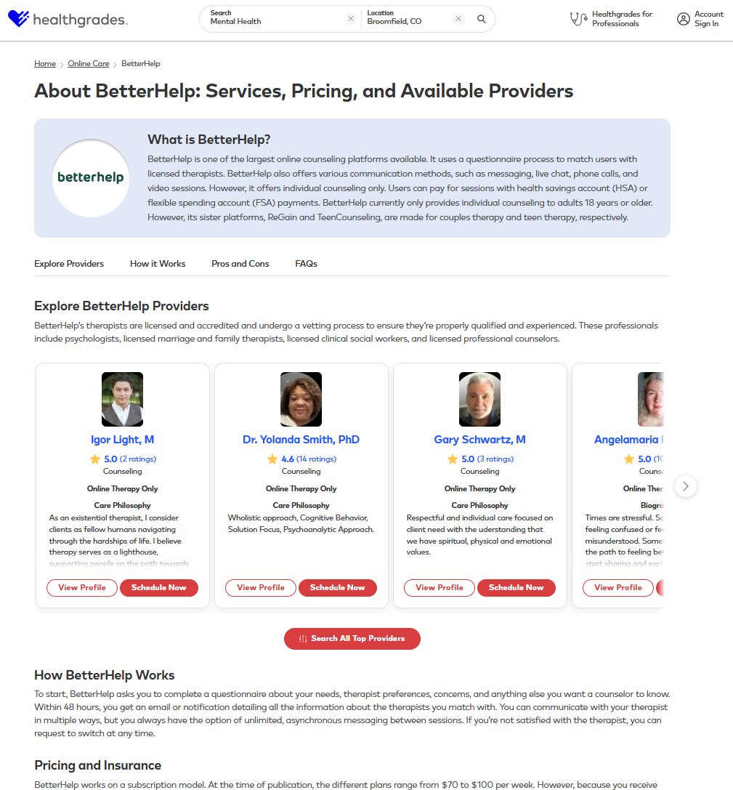

Behavioral Health SEO: Capturing Demand Earlier in the Funnel
At a Glance
- Challenge
- Behavioral health traffic relied on provider profile pages, missing users still researching brands, pricing, and insurance.
- What I did
- Proposed and led a net-new content strategy: 8 brand research hub pages built around comparison, pricing, and insurance intent, guiding users to providers and partners.
- Outcome
- Launched all 8 pilot pages, won senior leadership buy-in to expand, and created a repeatable model for future partners.
- Skills
- Search intent modeling, content strategy, information architecture, executive buy-in, cross-functional leadership
The Problem
Healthgrades’ behavioral health experience was centered almost entirely on individual provider profile pages. While effective for users ready to book care, this structure failed to capture demand from users earlier in the decision journey.
This gap created measurable challenges:
- Behavioral health partners were underperforming in their campaigns
- Users researching brands, pricing, insurance, and care models had no clear entry point
- Traffic declines were amplified by sitewide algorithm volatility and misaligned intent targeting
The existing model did not reflect how users actually search for online behavioral health services.
The Insight
Through keyword and SERP analysis, we identified that behavioral health users:
- Begin with brand-led and comparison searches, not provider names
- Seek clarity around pricing, insurance coverage, and care delivery models
- Spend meaningful time in research mode before converting
Competitors and editorial publishers were capturing this higher-funnel demand, while Healthgrades remained concentrated at the point of conversion.
The Strategy
I proposed and led a net-new SEO and content strategy designed to expand Healthgrades’ role earlier in the behavioral health decision journey without sacrificing downstream conversion.
1. Brand Research Hub Pages
We launched 8 pilot landing pages within the online care and behavioral health space, each built to capture branded, comparison, and insurance-driven intent.
Each page was structured to include:
- Brand overview and care model explanation
- Pricing and insurance considerations
- Audience and condition fit
- Pros & cons in a comparison-ready layout
- User sentiment and trust signals
- Links to affiliated provider profiles
- Long-tail FAQs driven by keyword research
These pages created net-new organic entry points aligned with how users evaluate behavioral health platforms.
2. Intent-Driven Funnel to Conversion
Rather than replacing provider profiles, the hubs acted as intent qualifiers, guiding users toward provider profiles and partner sites.
This approach balanced discovery, education, and conversion while improving relevance across the funnel.
My Role & Skills Demonstrated
- Primary strategy owner: Developed and owned a new approach never previously implemented at Healthgrades
- Executive influence: Presented the strategy to senior leadership and secured buy-in
- Search intent modeling: Mapped behavioral health demand across awareness → consideration → conversion
- Advanced keyword research: Built clusters using seoClarity and Ahrefs, validated with internal traffic data
- Information architecture: Designed scalable page structures aligned to user intent
- Cross-functional leadership: Coordinated SEO with Design, Product, Editorial, Brand, and Partnerships
Execution & Enablement
- Launched an initial cohort of 8 behavioral health landing pages
- Adjusted existing templates to minimize engineering lift
- Defined schema requirements (FAQ, reviews) to support SERP visibility
- Established a testing and expansion framework for future partners
Measurement
Success was measured using:
- Organic traffic growth to brand hub pages (Snowflake)
- Ranking improvements across branded and comparison keyword clusters (seoClarity)
- Engagement and click-through behavior to provider profiles and partner destinations
- Early performance signals within a 2–4 week observation window
Final Result
- Successfully launched 8 net-new behavioral health landing pages, expanding Healthgrades’ organic footprint beyond provider-only experiences
- Established a scalable SEO model for capturing higher-funnel behavioral health demand
- Validated leadership support for a broader expansion of brand- and research-led content
- Created a repeatable framework to support future behavioral health partnerships and online care categories
Detailed ranking, traffic, and conversion results are available on request (internal data).
